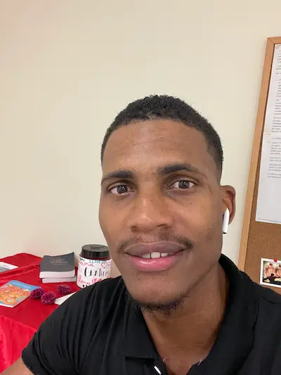

Esmael Borges | WDD 130
Hello! My name is Esmael Borges, and I come from the beautiful island of Sal in Cabo Verde. Ever since I can remember, technology has captivated me. From tinkering with gadgets to keeping up with the latest innovations, my passion for technology has only grown stronger. This passion has driven me to pursue this course, with the ultimate goal of becoming a real developer.
In my journey to understand the world of technology better, I have always been intrigued by its ever-evolving nature. Each new development adds to the thrill, and I am eager to dive deep into the nuances of coding, software design, and problem-solving. This course offers the perfect opportunity to transform my enthusiasm into practical skills, and I am excited to embrace every challenge it brings.
When I'm not immersed in the world of technology, I find balance through my love for tennis. The precision, strategy, and mental focus required on the tennis court resonate with the qualities needed in coding. Additionally, I have a passion for continuous learning, constantly seeking new knowledge and skills to expand my horizons.
In conclusion, I am Esmael Borges from Cabo Verde Sal, and I am excited to turn my lifelong passion for technology into a career as a developer. With tennis to keep me grounded and a love for learning to keep me inspired, I am ready to embark on this exciting journey. Let's see where this course takes us!